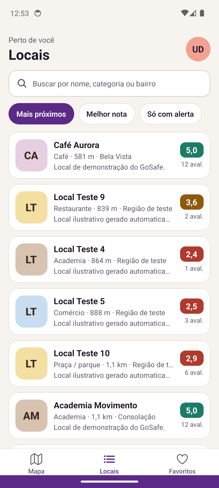

1
Encontre locais perto de você
O mapa é a tela inicial, como em aplicativos de mobilidade. Ele carrega só os locais da área visível, e cada pin mostra a nota do lugar. Na lista, dá para buscar por nome, categoria ou bairro e ordenar por distância ou nota.
